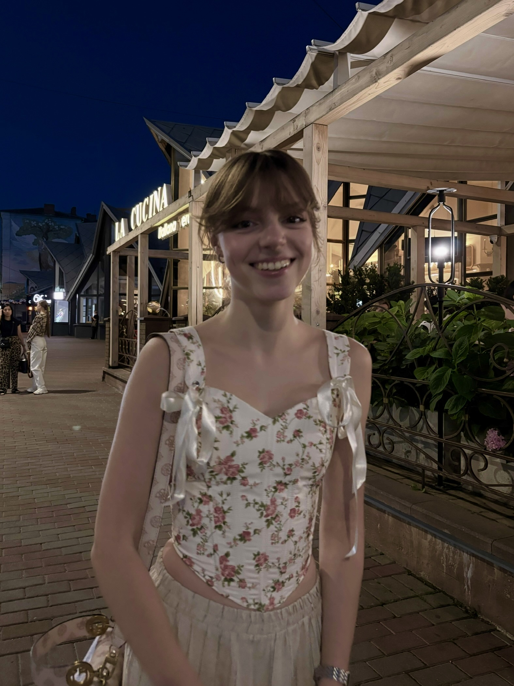

Подільський науковий ліцей, м. Вінниця
Закінчила заклад з відзнакою у класі з поглибленим вивченням математики. Брала активну участь в учнівських олімпіадах та наукових турнірах.

кумедна · щира · цілеспрямована
Привіт! Мені 19 років, я студентка факультету прикладної математики. Цікавлюся аналітикою даних, мистецтвом та відкриттям світу через подорожі.
Не бійся не впоратись — бійся навіть не спробувати
Закінчила заклад з відзнакою у класі з поглибленим вивченням математики. Брала активну участь в учнівських олімпіадах та наукових турнірах.
Освітня програма «Прикладна математика». Хороша успішність, отримую академічну стипендію. Відвідую заходи, пов'язані із фахом.
Фундаментальний напрям мого професійного розвитку. Вивчаю проєктування реляційних баз даних, синтаксис SQL та роботу з масивами даних для аналітики.
Дисципліна, що дає математичну строгість усім висновкам в аналітиці й машинному навчанні.
Практичне застосування алгоритмів для обчислення складних математичних моделей на комп'ютері.
Знімаю атмосферні кадри під час подорожей, монтую естетичні ролики, фіксуючи моменти життя.
Обожнюю відвідувати вистави у театрі, картинні галереї та живі концерти для натхнення.
Читаю фахову літературу з психології людини та треную пам'ять вивченням віршів напам'ять.
Музика створює настрій для навчання та подорожей. Серед моїх безумовних фаворитів:
Глибокі стрічки Крістофера Нолана, де фундаментальна наука переплітається з людською трагедією.
Класична атмосфера, тонкий психологізм характерів та естетичні пейзажі.
Серіали про силу спостережливості, аналітичний склад розуму та логічні дедуктивні ланцюжки.
Тренування на скеледромі: розвиток координації, витривалості та вміння знаходити шлях у складних умовах.
Сходження на вершини, де відчувається масштаб природи та перевіряється сила волі.
Участь у забігах, постійна дисципліна та регулярні тренування в залі.
Вогонь запеклих не пече.
— Тарас Шевченко
Сміливі завжди мають щастя.
— Іван Багряний, «Тигролови»
У світі невизначеності найкраща опора — власна внутрішня логіка та щоденна дисципліна.